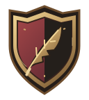
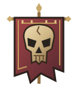

AThe Scribe’s Ward
A split heraldic shield with a cut-feather quill. An adventurer’s register, rather than another book icon.

UNOFFICIAL · WFRP FIFTH EDITIONThe Character Ledger
Elise FalkenrathHuman · Soldier · Recruit
Four original directions drawn from fantasy heraldry, manuscript initials and old printer’s devices. Same brass, oxblood and worn-vellum palette as the app.
Design studies only.
The live logo is unchanged.
A split heraldic shield with a cut-feather quill. An adventurer’s register, rather than another book icon.

A ten-sided die beneath a burning trail. More playful: chance, peril and a character’s uncertain future.
Interlocked, custom-drawn C and L. Angular manuscript lettering with a red inset and an antique metal edge.
A carved skull on a ragged muster pennon. The darkest option: mercenaries, graveyards and grim campaigns.

Original vector studies. No copied Warhammer wordmark or faction crest. The small samples reveal which details survive at actual header and icon sizes.